对数学美的认识就是能够认识或感受数学的内容、结构、思想方法等方面的美，是对数学外在形式的美好感受和内在本质的理性欣赏。
不同的人对数学的美的认识往往是不同的，数学家对数学的感情最深，对数学的美的认识也更深刻，如美国数学史学家、数学家M·克莱因这样描述数学：“它是人类最杰出的智慧结晶，也是人类精神最富独创性的产物，音乐能激起或平静人的心灵，绘画能愉悦人的视觉，诗歌能激发人的感情，哲学能使思想得到满足，工程技术能改善人的物质生活，而数学则能够做到所有这一切。” (1)
对于普通人而言，对数学的印象往往是抽象、枯燥、难学，除了应对升学考试外，好像没什么用。
先给大家出一个谜语：打一样东西，看不见，摸不着，人人时刻都需要。谜底是：空气。数学也像空气一样，看不见，摸不着，但它却无时无刻不在我们身边。也就是说，数学是有广泛应用的，每个人都离不开它，但它却做了好事不留名。以至于很多人都会质疑：数学除了日常生活中购物时的加减乘除那点算术运算，还有什么用呢？再加上在升学考试中数学题目较难，很多老师在教学中会增加远超过教科书上习题难度的题目让学生大量训练，还有很多家长让孩子参加课外辅导班，导致很多人害怕甚至厌恶数学，对数学产生了不好的印象。
在日常生活中购物时需要的数学虽然简单，但是也是有学问的，各个商场、超市、网店在什么时间、什么商品最优惠，需要对信息和数据有敏感性，这也是数学能力的一部分。另外，实际上每个人都会涉及投资理财，如存款，买国债、保险、基金、股票等，包括买房、装修、买汽车等大额开支方面更需要收集信息和数据、精打细算。还有，在物理、化学、生物、电子信息技术、计算机、建筑、机械、电力、自动控制、经济、农业、军事、人口等很多领域都会用到数学。一个人如果没学好数学，很难从事大学阶段的理工科的学习和研究，即使文科的某些专业，也会用到数学。如前文所述，在当今大数据时代，数学的作用就更大了。可以说，没有数学的发展，就不会有今天的市场经济和信息化社会。当然，作为普通公民没有必要学习太抽象的高深数学知识，但是总要有一些人去研究，因为现代社会已经离不开数学了。
如果我们能够认识到数学有很大作用，那么可以先不讨厌数学，或者有一点好感，再来看看数学有什么美的地方。
数学的内容和结构有一种简洁美、和谐美。正如符号化思想所描述的，数学的符号化语言使得数学的表达简洁化、形式化、国际化，便于应用和交流。数学有很多分支学科，理论自成一体、自圆其说，体现了和谐美。
数学的形式有一种对称美。几何图形有很多是对称的，如长方形、正方形、圆等。数与式也有很多对称的，如下面的算式。
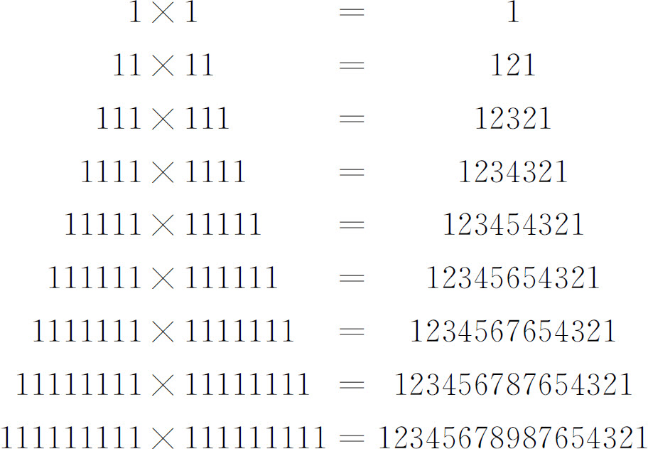
数学思想方法有一种内在的、独特的美，从数学知识提炼出思想方法，是一种升华的美。
因此，数学不但有很多用处，数学还很美。
生活中有很多美的事物，如美丽的风景、照片、山水画，优美的音乐、诗歌、舞蹈等等，使我们的生活丰富多彩，人们觉得生活无限美好。当我们内心放松、无压力的时候，往往更能够感受到美的存在，如看到路边的迎春花在料峭的春风中绽放时，随手用手机拍几张照片发到微信上，心情会更好。但是，当我们的心情紧张、压力大的时候，面对钢琴被迫弹奏，也可能像坐在火炉上烤一样难熬，感受不到音乐的美。在升学就业压力的强烈冲击下，很多家长陷入了实用主义美学的泥潭，使得像钢琴这种高雅的艺术也被一些家长当作升学的筹码，逼着不知道是否内心真正喜欢、是否有天赋的孩子们学习钢琴，我相信很多孩子的感受不一定是美的。那数学就更谈不上美了，在多数学生和家长的眼中，数学也只是升学考试的筹码，在繁难的大量的数学作业面前，怎么可能感受到数学的美呢？由此看来，想让学生甚至家长认识到数学的美，必须创造相应的学习环境。
在小学数学中，能够让学生欣赏数学美的地方有很多。既要让学生认识数学符号、公式的简洁美，欣赏几何图形和算式的对称美，加与减、乘与除、奇与偶等的对立统一的和谐美，也应体会数学思想方法的升华美、境界美。让学生认识到如果能学会用数学思想方法学习数学、解决问题，不仅是数学素养的提高，也是一种理性认识的升华。
实事求是地说，学生学习数学有压力的主要原因不是教材，而是升学考试带来的超标内容的训练和课外辅导；如果考试题目的难度不超过教材，相信大多数学生就不会在数学学习上有太大压力了。因此，要让学生在学习数学的过程中感受和认识数学的美，首先要以教材为基础和核心，难度上不宜超过教材，让学生在掌握“四基”的基础上欣赏数学的美。
如图5-1所示，线段AB ＝1，在AB 上取一点C ，使得BC ：AC ＝AC ：AB ；那么可求得AC ≈0.618（实际上是无限不循环小数），这个数称为黄金数。BC ：AC ＝AC ：AB ＝0.618：1，因这个比在生活中有很多能够产生美感的应用，因此把它称为黄金比，或黄金分割。
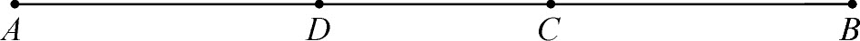
图5-1
在AB 上再取一点D ，使得AD ：BD ＝BD ：BA ；那么可求得BD ≈0.618。可推出AD ＝AB -BD ≈0.382，BC ＝AB -AC ≈0.382，CD ≈0.236，即AD ＝BC 。CD ：AD ＝DC ：BC ＝0.236：0.382≈0.618：1。C、D 两个黄金分割点具有对称性，而且还可以这样对称地分割下去。数学家华罗庚把这种方法应用于生活和生产，称为“优选法”。
案例1 斐波那契数列为1，1，2，3，5，8，13，21，34，55，89，…这些数被称为斐波那契数。计算相邻两个数的商，前项作被除数，后项作除数，商取三位小数。你能发现什么规律？
分析 经过计算，由相邻两个数的商组成的数列为：1，0.5，0.667，0.6，0.625，0.615，0.619，0.618，0.618，0.618，…观察这个数列，从第8项开始，都是0.618，由此可以归纳：斐波那契数相邻两个数的商，随着项数的增大，越来越接近0.618。
案例2 一般的选美标准认为，除了体重等指标外，还要求一个人的肚脐以上的长度与肚脐以下的长度之比等于0.618。一个女士身高168厘米，肚脐以上部分长68厘米。那么她应穿多高的高跟鞋比较美？（结果精确到1厘米）
分析 身高减去肚脐以上长度，就是肚脐以下部分长度，设她应穿高x 厘米的高跟鞋，根据题意得
68：（168-68＋x ）＝0.618，
68÷0.618＝100＋x ，
x ≈10。
应穿高10厘米的高跟鞋。
分析与综合都是思维的基本方法，无论是研究和解决一般问题，还是数学问题，分析和综合都是最基本的具有逻辑性的方法。分析与综合本是两种思想方法，但因二者具有十分密切的联系，因此把二者结合起来阐述。
分析是把研究对象的整体分解为若干部分、方面和因素，分别加以考察，找出各自的本质属性及彼此之间的联系。综合是把研究对象的各个部分、方面和因素的认识结合起来，形成一个整体性认识的思维方法。分析是综合的基础，综合是分析的整合和深入，综合是与分析相反的思维过程。在研究数学概念和性质时，往往先把研究对象分解成几个部分、方面和要素进行考察，再进行整合，从整体上认识研究对象，形成理性认识。实际上教师和学生都在经常有意识和无意识地运用分析和综合的思维方法。如认识等腰梯形时，可以从它的边和角等几个要素进行分析：它有几条边？几个角？四条边有什么关系？四个角有什么关系？再从整体上概括等腰梯形的性质。另外，在数学中的分析法还有一种特定的含义，一般被理解为：在证明和解决问题时，从结论出发，一步一步地追溯到产生这一结论的条件是已知的为止，是一种“执果索因”的分析法。综合法一般被理解为：在证明和解决问题时，从已知条件和某些定义、定理等出发，经过一系列的运算或推理，最终证明结论或解决问题，是一种“由因导果”的综合法。如小学数学中的问题解决，可以由问题出发逐步逆推到已知条件，这是分析法；从已知条件出发，逐步求出所需答案，这是综合法。再如分析法和综合法在中学数学作为直接证明的基本方法，应用比较普遍。因此，分析法和综合法是数学学习中应用较为普遍的相互依赖、相互渗透的思想方法。
大纲时代的小学数学教育，比较重视逻辑思维能力的培养，在教学过程中重视培养学生的分析、综合、抽象、概括、判断和推理能力，其中培养学生分析和综合的能力、推理能力是很重要的方面，如在解答应用题时重视分析法和综合法的运用，也就是说可以先从应用题的问题出发，找出解决问题需要的条件中哪些是已知的、哪些是未知的，未知的条件又需要什么条件解决，这样一步一步倒推，直到利用最原始的已知条件解决。这样分析了数量关系和解题思路后，再利用综合法根据已知条件列式解答。再如在学习概率统计时对各种统计数据需要经过整理和描述，并进行分析和综合，作出合理的判断和预测。分析法和综合法是培养学生分析问题、解决问题和推理等能力的重要的思想方法。
如上所述，分析法和综合法作为数学的思想方法，在小学数学的各个方面都有重要的应用。首先，在四大领域的内容中，无论是低年级的数和计算、图形的认识，还是中高年级的方程和比例、统计与概率，分析法和综合法都有较多应用。如数的计算法则的学习，就是一个先分析再综合概括的过程，先一步一步地学习法则的不同方面，再综合概括成一个完整的法则。其次，在贯穿整个数学学习过程中的问题解决、判断和推理证明等方面，分析法和综合法也是无所不在。如在进行一个概念或者性质的判断时，必须先进行分析，然后才能作出判断。
分析能力和综合能力作为培养逻辑思维能力和解决问题能力的重要方面，应给予足够的重视，在教学中应注意以下几点。
第一，在学习一般的数学概念和性质时注重分析能力和综合能力的培养。小学数学的很多知识，学生往往经历先分析再综合的过程，即先认识局部特征，再从整体上认识或者形成抽象概念的过程。如图形的认识，在第一学段学生通过操作和直观初步感知图形的一些特征，到了第二学段，可以从整体上认识或者抽象成概念。教师从低年级开始就应注重分析能力的培养，从而为后续的学习打下较好的基础。
第二，在解决问题时注重分析法和综合法的结合运用。
简单的问题，往往直接应用综合法便可解决；复杂的问题，往往需要把分析法和综合法结合运用。分析法从问题出发逐步逆推，便于把握探索的方向，综合法的思维具有发散性，能够提供多种策略；把二者结合起来，便于根据已知条件提供向问题靠拢的策略，使问题尽快得到解决。
案例1 一件衬衫的标价是150元，现在因换季按标价打八折的优惠价出售，还能够在进价的基础上获利20％。这款衬衫的进价是多少钱？
分析 要想求进价是多少钱，需要知道进价加上获利的20％一共是多少钱，进价加上获利的20％等于优惠价，优惠价等于标价的80％。
根据分析法找出的数量关系和解题思路，用综合法列式如下。
（1）进价加获利20％一共的钱数：150×80％＝120（元）。
（2）这款衬衫的进价是：120÷（1＋20％）＝100（元）。
列成综合算式是：150×80％÷（1＋20％）＝100（元）。
案例2 食品店把120千克巧克力分装在两种大小不同的盒子里，先装0.25千克一盒的装了200盒，剩下的每盒装0.5千克。这些巧克力一共装了多少盒？
分析 要想求一共装了多少盒，因为有大盒和小盒两种包装规格，已经知道小盒有200盒，所以要先求大盒的装了多少盒。因为大盒每盒装0.5千克，要想求大盒装了多少盒，应先求大盒共装了多少千克。因为总共有120千克巧克力，要想求大盒装了多少千克，应先求小盒装了多少千克。可以根据已知条件小盒每盒装0.25千克和共有200盒，算出小盒装的千克数。
利用分析法找出了数量关系和解题思路，即可用综合法列式解答。
（1）小盒共装的千克数：0.25×200＝50（千克）。
（2）大盒共装的千克数：120-50＝70（千克）。
（3）大盒装的盒数：70÷0.5＝140（盒）。
（4）一共装的盒数：200＋140＝340（盒）。
综合算式为：200＋（120-0.25×200）÷0.5＝340（盒）。
案例3 明明家有一些苹果和梨，苹果的个数如果再减少5个，就恰好是梨的个数的3倍。如果每天吃4个苹果和2个梨，当梨吃完时苹果还剩15个。那么原来梨和苹果各有多少个？
分析 要想求出苹果和梨的个数，一是要找出苹果和梨的关系，二是要求出苹果或者梨的个数。从题目中可以看出，苹果比梨的个数多，可考虑把梨的个数作为标准量来分析它们的倍数关系。从题目的第二句话可以得出：苹果比梨的2倍多15个；从第一句话可以得出：苹果比梨的3倍多5个。综合起来可以得出：苹果与梨相比较，苹果减少15个是梨的2倍，减少5个是梨的3倍；所以，从15个中减去5个，剩下的10个就是梨的个数，从而，苹果的个数为35个。
反证法是间接证明的一种基本方法，当我们需要证明一个命题为真时，先假设这个命题为假，经过正确的推理，最后得出矛盾，因此说明假设错误，从而证明了原命题应为真，这样的证明方法叫做反证法。反证法是演绎推理的一种，依据的是排中律，就是说两个互相矛盾的判断不可能同假，其中必有一真。
如前所述，《标准（2011版）》提出了培养学生推理能力和逻辑思维能力的要求。反证法是从另一个角度利用推理进行证明的思想方法，无疑也是培养学生推理能力的重要的思想方法。因此，它的重要性也是不言而喻的。另外，反证法虽然有一定难度，但是它对于培养学生思维的灵活性和解决问题的能力也有益处。
反证法作为一种思想方法，不仅在数学中有很多应用，在日常生活和其他学科中也有应用。数学史上有比较经典的利用反证法证明的问题，如证明
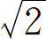
是无理数，证明素数有无限多个等。小学数学中，反证法的应用不多，在抽屉原理等问题中有一些渗透。反证法在小学数学教学中应用较少，教师在教学时应注意以下几点。
第一，掌握它的基本原理和步骤是必要的。反证法采用的论证方式是演绎推理中的假言推理形式，依据的是排中律。它的证明步骤大致如下：（1）假设待证的结论为假、反论题为真；（2）从反论题出发，经过正确的逻辑推理，得出与已知条件或者定义、定理、公理、事实等矛盾；（3）根据排中律得出原结论成立。
第二，对反证法涉及的一些概念和词语应正确理解。在描述一对概念间的关系时，应注意怎样描述才是矛盾的。如“是与不是”、“等于与不等于”、“大于与不大于”、“至少有一个与一个也没有”等是相互矛盾的关系。有时候要注意容易出现错误的地方，如“大于5与小于5”、“正数与负数”等不是相互矛盾的关系，是一种对立关系。也就是说，两个矛盾的种概念外延之和等于属概念的外延，两个对立的种概念的外延之和小于属概念的外延。大于与小于中间有等于、正数和负数中间有0。大于5与不大于（小于等于）5、正数与非正数（0和负数）才是矛盾关系。
第三，对于学生来说，只需初步了解其方法。作为教师而言，要掌握反证法的基本原理、步骤和推理方法，以便在教学中把握反证法的科学性。学生通过简单的案例和运用反证法通俗易懂的推理过程，能够了解反证法的基本思想和数学方法的丰富性，培养思维的灵活性。
案例1 把43人分成7个小组，总有一个小组至少有7人。请说明理由。
分析 假设每个小组最多有6人，那么7个小组最多有42人，与已知条件有43人矛盾，假设不成立，所以总有一个小组至少有7人。
案例2 把11个参加活动的名额分配给6个班，每班至少分配1人。请说明：不管怎样分，至少有3个班的名额相等。
分析 假设名额相等的班级最多有2个，那么需要的名额总数至少应为：（1＋2＋3）×2＝12（个），与已知条件有11个名额矛盾。所以至少有3个班的名额相等。
案例3 在直角三角形ABC 中，∠C 是直角，请说明：∠A 一定是锐角。
分析 假设∠A 不是锐角，首先三角形的任何一个内角不可能等于0°，那么有∠A ≥90°，又因为∠C ＝90°，∠B ＞0°，所以∠A ＋∠B ＋∠C ＞180°，这与三角形的内角和等于180°矛盾。所以∠A 一定是锐角。
假设法是通过对数学问题的一些数据做适当的改变，然后根据题目的数量关系进行计算和推理，再根据计算所得数据与原数据的差异进行修正和还原，最后使原问题得到解决的思想方法。假设法是小学数学中比较常用的方法，实际上也是转化方法的一种。
假设法实际上是根据原来的数据、数量关系和逻辑关系，做一些数据的改变，把原问题转化成新的问题，而且新的问题易于理解和解决，是一种迂回战术，表面上看解题的步骤变多了，但实际上退一步海阔天空，更有利于计算和推理，有利于培养学生灵活的思维方式、解决问题的能力和推理能力。
假设法在小学数学中的应用比较普遍，例如在有关分数的实际问题，比和比例的实际问题，鸡兔同笼问题，逻辑推理问题，图形的周长、面积和体积等问题中都有应用。
假设法的教学，对学生的分析和综合能力、逻辑思维能力等方面的要求较高，在教学中应注意以下几点。
第一，根据题目的特点，选择适当的数据进行假设。在解决问题的过程中，如果遇到数量关系稍复杂的问题，要思考它与已掌握的什么知识有关系，用什么思想方法或者模型来解决，然后想方设法把它转化成数量关系明确而且易于理解的已有的知识。
案例1
（1）六年级参加植树的男生和女生共有36人，其中男生人数是女生人数的3倍。男生和女生各有多少人？
（2）六年级参加植树的男生和女生共有36人，其中男生人数的
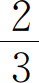
是女生人数的2倍。男生和女生各有多少人？分析 第（1）题，是学生非常熟悉的问题，男生人数与女生人数的数量关系非常清楚且易于理解，既可以用方程解决，也可以用一般的算术方法计算。第（2）题，数量关系与第（1）题有类似的地方，但又稍复杂，可看作是第（1）题的变形题。两个数量无法直接用一个未知数表示，因而无法直接用一元一次方程解决；如果用算术方法，可这样想：根据题中的条件可知，在不改变男生和女生的比例关系前提下，可假设男生有3人，那么3的三分之二是2，2除以2等于1，因而女生有1人，所以男生人数是女生的3倍。这样就把第（2）题转化成了第（1）题，再用算术方法列式计算便可。
案例2 小明和妈妈恰好花100元买了10本书，单价有8元一本的和13元一本的两种。其中8元一本的和13元一本的各买了几本？
分析 假设10本书都是买的8元一本的，那么才花了80元，比实际少花20元。两种书的单价相差5元，20里有几个5，就得出13元的有几本。20÷（13-8）＝4，所以8元的买了6本，13元的买了4本。
第二，在数量之间具有一定的比例关系前提下，可假设其中的一个数量为单位“1”，可大大简化计算的繁琐程度。
案例3 足球比赛门票是20元一张，平均每场有5000名观众，降价后每场观众增加了50％，收入增加了20％，降价后门票的价格是多少？
分析 首先要明确一个基本的数量关系式：观众人数×门票价格＝收入。先按照一般的解题思路分析，根据题意，要求的是降价后门票的价格，需要知道降价后的收入和观众人数。降价后的收入是：5000×20×（1＋20％）＝120000（元）。降价后的观众人数是：5000×（1＋50％）＝7500（人）。所以降价后的门票价格是：120000÷7500＝16（元）。实际上此题还可以用假设法，根据题意，降价后的人数和收入都是在原来的基础上分别按照一定比例变化，实际上观众人数是5000还是500并不影响计算的结果，因此只需要设观众人数为单位1就行。假设降价前的观众人数是1，则降价后的观众人数是1×（1＋50％）＝1.5，降价前的收入是20×1，则降价后的收入是20×1×（1＋20％）＝24，所以降价后的门票价格是：24÷1.5＝16（元）。
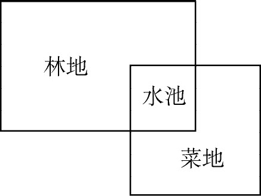
图5-2
案例4 如图5-2所示，水池和菜地组成了一个正方形，水池和林地组成了一个长方形，重叠的部分是正方形水池。水池的面积占长方形的
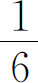
，占正方形的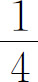
。林地的面积比菜地多200m2 ，水池的占地面积是多少？分析 因为水池的面积既与长方形有比例关系，也与正方形有比例关系，所以可设水池的面积为1，那么林地的面积为
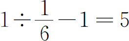
，菜地的面积为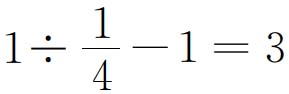
，那么林地比菜地多2（5-3＝2）个单位面积，所以1个单位面积是200÷（5-3）＝100（m2 ）。所以水池的占地面积为100m2 。案例5 笼子里有若干只鸡和兔。从上面数有35只头，从下面数有94只脚。鸡和兔各有几只？
分析 此题在教材中已经给出了猜测、假设、方程等各种解法。这里再介绍一种有趣的解法。假设让每只鸡和兔子先抬起一只脚，然后再抬起一只脚。这时鸡只能是屁股坐在地上，从下面数已经没有脚了；而每只兔子还有2只脚，而且从下面数的脚都是兔子的。从已知条件可知，鸡和兔共有35只，两次抬起了35×2＝70只脚，那么下面还剩94-70＝24只脚，这24只脚都是兔子的，所以兔子有24÷2＝12只。所以鸡有35-12＝23只。
在解决有关计数问题的过程中，当需要计算的次数不多时，我们通常把要计数的所有对象一一列举出来，从而求出其总数，这种计数方法就是穷举法，或叫枚举法、列举法。穷举法与分类讨论方法类似，需要确定一个分类标准，再进行计数，保证计数不重复不遗漏。
穷举法因其思维简单、方法直观而被小学生接受，但又因其一一列举的人工计算的繁琐性，而不宜被推广到大数目的计算。
当计算机出现以后，计算机因运算速度快、精确度高，从而可以代替繁琐的人工计算，对要解决问题的所有可能情况，一个不漏地进行检验，从中找出符合要求的答案，因此穷举法是通过牺牲时间来寻找答案。如破译密码就是应用了穷举法，简单地说就是将密码进行逐个推算直到找出真正的密码为止。例如一个全部由数字组成的四位密码，其组合数共有10000种，也就是说最多尝试9999次才能找到真正的密码。我们可以运用计算机来进行逐个推算，破解任何一个密码只是一个时间问题。
在小学数学中，简单的排列组合问题可以应用穷举法解决。
使用穷举法计数时，要注意以下两点：
（1）初步估计计数的次数，总数不宜太多，又没有更简洁的办法。
（2）为了使列举的结果不重复又不遗漏，要选择适当的标准分类，有顺序、有条理地列举。
案例1 有长度分别为3厘米，5厘米，7厘米，9厘米的4条线段，任意选取三条线段组成三角形，最多能够组成多少个？
分析 为了不出现失误，可进行穷举，把各种组合都列举出来，再判断。
A ：3，5，7；B ：3，5，9；C ：3，7，9；D ：5，7，9。
A、C、D 三种组合满足条件。
案例2 在1～200的自然数中，数字“2”出现了多少次？
分析 在1～200这200个数中，“2”可能出现在个位、十位、百位上，我们就按数位来分类列举。
2在个位上：2，12，…，92；102，112，…，192，共10×2＝20次。
2在十位上：20，21，…，29；120，121，…，129，共10×2＝20次。
2在百位上：200，共1次。
所以，“2”总共出现了20＋20＋1＝41次。
案例3 我国古代数学著作《张丘建算经》上有一个著名的“百鸡问题”，题目原文为：今鸡翁一值钱五，鸡母一值钱三，鸡雏三值钱一。凡百钱买鸡百只，问：鸡翁、母、雏各几何？
题目中的“鸡翁”“鸡母”“鸡雏”分别指“公鸡”“母鸡”“小鸡”。若用通俗语言来表述，题目的意思如下：
公鸡5文钱一只，母鸡3文钱一只，小鸡1文钱3只。用100文钱买了100只鸡，问：在这100只鸡中，公鸡、母鸡和小鸡各有多少只？
分析 这道题目有3个量，是有一定难度的古代名题，不适合一般小学生，所以多年来没有出现在教材及普通读物中。但是教材中有“鸡兔同笼”及“100个和尚吃100个馒头”的问题。从这个思路出发，想办法把原题转化成一般的鸡兔同笼问题。首先，我们可假定公鸡的只数为0。这样，题目就变成了：
母鸡3文钱1只，小鸡1文钱3只。用100文钱买了100只鸡。问：在100只鸡中，母鸡和小鸡各有多少只？
实际上这道题转化成了“100个和尚吃100个馒头”的问题了。因为买鸡用的100文钱是整数，因而小鸡的只数必定是3的倍数，否则就会出现非整数的钱数。然后可以把3只小鸡与1只母鸡分成一组，这4只鸡4文钱。那么我们看看100里面有多少个4，就是有多少只母鸡。100÷4＝25，所以母鸡有25只，小鸡有100-25＝75只。实际上还可以采取穷举法，当然没必要死板地运用穷举法，可以先缩小范围，使得列举的次数尽量少些。比如我们可以先初步判断母鸡的只数不会超过33只，否则钱数肯定超过100；而且小鸡的只数必须是3的倍数。这样列举可能的组合如下：
31×3＋69÷3＝116，
28×3＋72÷3＝108，
25×3＋75÷3＝100。
这样我们就得到了一组与原来题意不相符合的答案：
公鸡0只，母鸡25只，小鸡75只。
为了使答案符合原题意，应让公鸡只数增加，不让其为0；同时母鸡的只数应减少，否则会出现100文钱买不到100只鸡的情况；如公鸡和母鸡各增加1只，1只公鸡和26只母鸡就已经用去了83（5＋26×3＝83）文钱，还有17文钱，只能买51只小鸡了；这样的话100文钱才买到78只鸡，不符合题意。还能够判断出小鸡的只数应同时增加，否则会出现钱数超过100的情况，如小鸡减少3只，相当于少花1文钱；而为了保证鸡的总数，公鸡和母鸡增加3只，都会出现增加的钱数远远超过1文钱的情况。因此，我们就初步明确了：为了保证每次变化的鸡的总数是100不变，钱的总数是100不变。每次公鸡增加、母鸡减少、小鸡增加3的倍数。
依据这一规律，我们便可大大缩小穷举的范围，先列举部分可能的组合：
1×5＋24×3＋75÷3＝102；
1×5＋21×3＋78÷3＝94；
2×5＋20×3＋78÷3＝96；
3×5＋19×3＋78÷3＝98；
4×5＋18×3＋78÷3＝100。
这时已经发现了一组答案：公鸡4只、母鸡18只、小鸡78只。
再继续列举下去，根据上边算式的规律，必须增加小鸡的只数，否则会出现钱数超过100的情况。
5×5＋14×3＋81÷3＝94；
6×5＋13×3＋81÷3＝96；
7×5＋12×3＋81÷3＝98；
8×5＋11×3＋81÷3＝100。
这时又发现了一组答案：公鸡8只、母鸡11只、小鸡81只。
再继续列举下去，根据上边算式的规律，必须再增加小鸡的只数，否则还会出现钱数超过100的情况。
9×5＋7×3＋84÷3＝94；
10×5＋6×3＋84÷3＝96；
11×5＋5×3＋84÷3＝98；
12×5＋4×3＋84÷3＝100。
这时又发现了一组答案：公鸡12只、母鸡4只、小鸡84只。
如果再继续列举下去，根据上边算式的规律，必须再增加小鸡的只数，否则还会出现钱数超过100的情况。如果把小鸡的只数增加到87只，用钱29文；那么公鸡和母鸡一共还有13只，这13只无论怎样组合，都不会超过65文钱，总钱数都不够100。所以只有以上三种答案。
从上述解答过程还可以发现一个规律，从0、25、75开始，是按照公鸡增加4只、母鸡减少7只、小鸡增加3只的规律找到答案的。笔者猜想，古人也可能是先通过全部的穷举，再总结出这个简便的规律的。
前文阐述了各种思想方法，并且绝大多数思想方法结合案例来例证各自的应用。实际上这些思想方法不是彼此完全独立的，相互之间有联系、有渗透；而且就同一个问题而言，可能用到多个思想方法。因此，有必要通过一些案例体现思想方法的综合应用。自从《标准（2011版）》颁布以来，我国小学数学教育又开始了新一轮的改革，课程理念更加先进，教材编排更加完善，课堂教学更具主体性。“然而，学业成就评价改革进展缓慢，特别是考试方式和试题编制方面变化甚微。就数学学科而言，我国仍在沿用旧有的评价方式，纸笔测试的标准化考试依旧盛行，数学试题的编制没有实质性的改变，仍过于关注显性知识和基本能力，却忽视了新课改所倡导的许多新的理念、思想和方法。” (2) 究其原因，笔者认为主要是因为我国初中升高中的中考，尤其是高中升大学的高考的试题的价值取向偏传统而造成的。一是缺少真正联系生活实际的应用问题，二是注重考查具体的知识、技能、解题方法和技巧，即使有一些联系实际的问题，如果长期停留在一个题型上，也容易导致应试化倾向。学生对模型思想、推理思想、数形结合思想、函数思想、分类讨论思想、统计思想等重要的数学思想方法是否真正把握不得而知。学生上了大学后，尤其是理工科学生，还要进一步学习线性代数、微积分、常微分方程等数学课程。高中毕业生是否掌握了主要的数学思想方法并能够为学好理工科（数学系除外）的大学数学课程打下良好基础不得而知。
那么，除了合理保持我国数学教育双基的传统优势外，数学的应用如何更加联系生活实际呢？PISA（Programme for International Student Assessment，国际学生评估项目）的数学测试题也许对我们有所启发，因为这个测试项目的数学部分主要考查学生是否掌握参与社会所需要的数学知识与技能，体现了数学在生活中的应用。尽管PISA测试的是15岁的学生，但对小学数学教学也有借鉴价值。下面的部分案例改编自PISA数学测试题。
案例1 在一场露天音乐会中，场地为一个长100米、宽70米的长方形，门票已售完并且场地上站满了歌迷。下面哪个数是对场地上人数的最佳估计？
A．5000
B．7000
C．28000
D．70000
分析 这道题需要应用模型思想计算长方形的面积，再根据每个人的占地面积、生活实际进行推理。长方形的面积是7000m2 ，根据生活常识，每个人站着的占地面积大约是0.125m2 ，也就是说1m2 站8个人已经比较拥挤了。选项D是70000人，每平方米站10人，显然人数过多，而且不够安全，所以先排除D。再看B，7000人，每平方米站1人，非常宽松，似乎可作为候选答案，但是与“站满了歌迷”这一描述不符。再看C，28000人，每平方米站4人，人数不多不少，也符合安全要求，所以是最佳答案。
案例2 爸爸匀速开车从甲地到乙地，当行驶了全程的
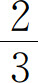
时，油箱里的油只剩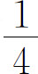
箱。只用这些油能到乙地吗？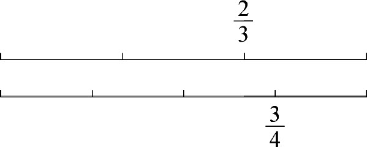
图5-3
分析 此题既可以运用模型思想，计算全程的耗油量，也可以直接推理。假设总路程是1，那么全程的耗油量为：
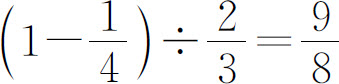
（箱）。也就是说，按照这个耗油量，全程需要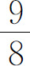
箱油，所以到不了乙地。当行驶了全程的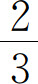
时，用了1箱油的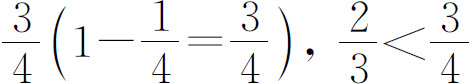
，即把路程和一箱油都看成1，行驶的路程的比例不能小于使用的油的比例，才能保证一箱油够用，用数形结合思想表示如图5-3。所以到不了乙地。案例3 小明家距离学校500米，小丽家距离学校800米。小明家距离小丽家多远？
分析 此题并不是常规的小学数学计算题，因为题目中并没有告知小明和小丽家的具体方位，无法直接计算，需要利用分类讨论思想、数形结合思想，这是小学生需要培养的思想方法，是培养学生的数学严密性的很重要的方法。本题还要利用三角形三边关系进行推理。小明和小丽家的方位可以有以下几种情况，如图5-4所示：（1）小明家、小丽家、学校在一条直线上，学校在小明家和小丽家之间；（2）小明家、小丽家、学校在一条直线上，小明家在学校和小丽家之间；（3）小明家、小丽家、学校不在一条直线上，三点连线成一个三角形。
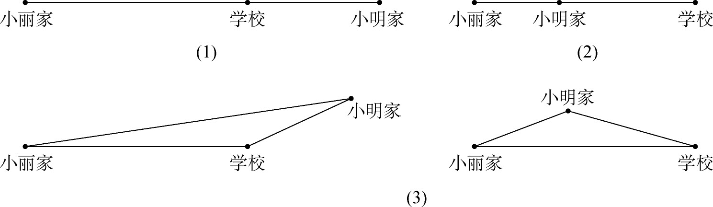
图5-4
根据上图可得：（1）两家距离最大，为1300米；（2）两家距离最小，为300米；（3）根据三角形任意两边之和大于第三边，任意两边之差小于第三边，可得小明与小丽家的距离大于300米，小于1300米。
案例4 小明是个滑板迷，他来到一家商店，可以买组装好的滑板，也可以买以下零件自己组装：一块板子、4个轮子、2个轮子架、一套金属配件。各种商品价格如表5-1所示。
表5-1
| 商品 | 价格/元 |
| 组装好的滑板 | 82或84 |
| 板子 | 40，60或65 |
| 4个轮子 | 14或36 |
| 2个轮子架 | 16 |
| 一套金属配件（轴承、橡胶垫、螺丝、螺丝钉） | 10或20 |
（1）小明想在这家商店买零件组装一个滑板，最低和最高价格分别是多少？
（2）如果先不考虑价格，小明最多可以组装几种不同的滑板？
（3）如果小明只有120元，在120元以内买最贵的，每种零件可以选什么价位的？在表格5-2中写出上面商品的价格。
表5-2
| 商品 | 价格/元 |
| 板子 | |
| 4个轮子 | |
| 2个轮子架 | |
| 一套金属配件（轴承、橡胶垫、螺丝、螺丝钉） |
分析 （1）最低价格是：40＋14＋16＋10＝80（元），最高价格是：65＋36＋16＋20＝137（元）。（2）可用部分穷举法加上分类讨论，因为板子有3种价格，先把40元板子的组合都找出来，再乘3就可得全部组合数。（40，14，16，10），（40，14，16，20），（40，36，16，10），（40，36，16，20），有4种。4×3＝12，总共有12种。如果用树状图（图5-5）就更直观些，从板子数到配件，有4条连线。
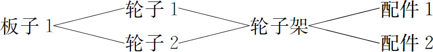
图5-5
（3）此题可在前两问的基础上计算、推理，因为137比80更接近120，所以从137开始推理。最高价格137比120多17，可在137的基础上做减法，把轮子的价格36换成14，减少22，全部价格变为115。现在还不能肯定115是120以内的最大值。如果把137中的65换成60，变为132，那么还需要减少12以上，17以下，才能保证最后的值大于115，表中没有合适的数。如果把137中的65换成40，变为112，则小于115。所以115组合是最终答案，如表5-3所示。
表5-3
| 商品 | 价格/元 |
| 板子 | 65 |
| 4个轮子 | 14 |
| 2个轮子架 | 16 |
| 一套金属配件（轴承、橡胶垫、螺丝、螺丝钉） | 20 |
案例5 从宾馆步行至山顶的路程是9千米，步行者必须在晚上8点前回到宾馆。几名游客决定沿此路线登山，计划上山的平均速度是每小时1.5千米，下山的速度是上山的2倍。上山和下山的速度已将吃饭和休息等花费的时间包含在内。如果这些游客要在晚上8时前返回，最晚几点钟必须出发？
分析 本题需要利用时间、速度和路程的关系模型来计算时间，然后根据上山和下山的总时间、回到宾馆的最晚时间进行逆向计算和推理。上山时间为：9÷1.5＝6（时），下山时间为9÷（1.5×2）＝3（时），总时间为9小时。如果在晚上8时，即20时前返回，20-9＝11，必须在11时前出发。
案例6 今天是小红的生日，她邀请了5个同学参加聚会，吃饭时这6个人围着圆桌坐，位置的安排必须满足下列要求：
（1）小丽挨着小红坐在小红的右边；（2）小梅在小雪和小东之间，挨着两人坐；（3）小明和小东挨着坐；（4）小雪不挨着小红。请在示意图（图5-6）中写出每个人的名字。
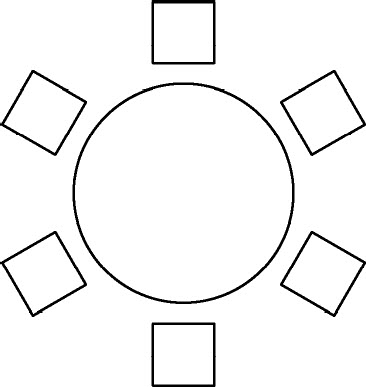
图5-6
分析 此题需要借助直观图进行试验、猜想、分析、推理，最后确定空间位置模型。先把小红和小丽的位置随意确定，如图5-7所示。再根据第（2）、（3）条确定4个人的顺时针位置关系可能为：小雪、小梅、小东、小明或小明、小东、小梅、小雪。然后根据第（4）条确定后一种关系正确，如图5-8所示。
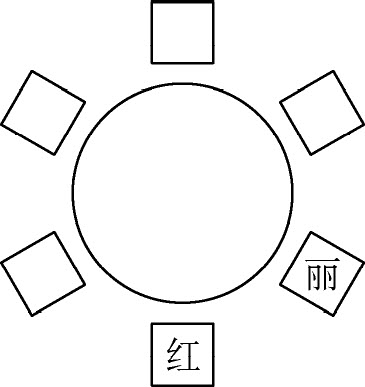 |
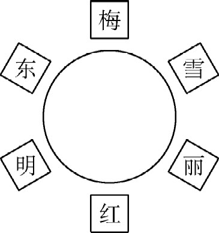 |
| 图5-7 | 图5-8 |
————————————————————
(1) M·克莱因．数学：确定性的丧失．长沙：湖南科学技术出版社，2007：465．
(2) 梅松竹，王燕荣．我国数学试题与PISA数学试题的比较及启示．数学通报，2012（6）．